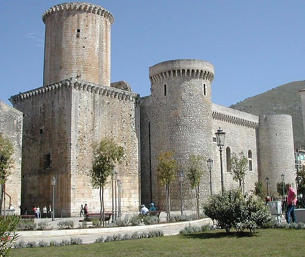
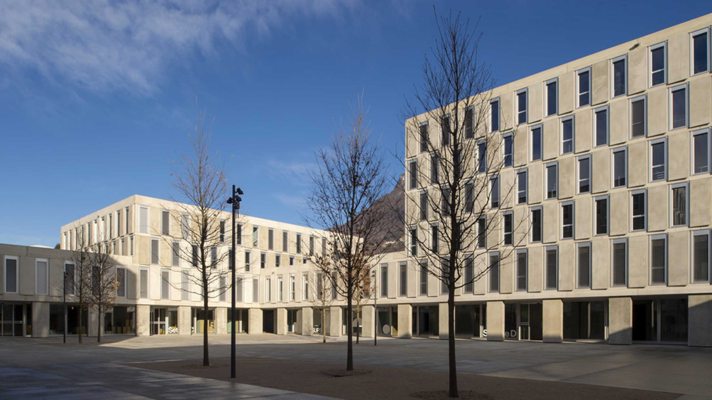
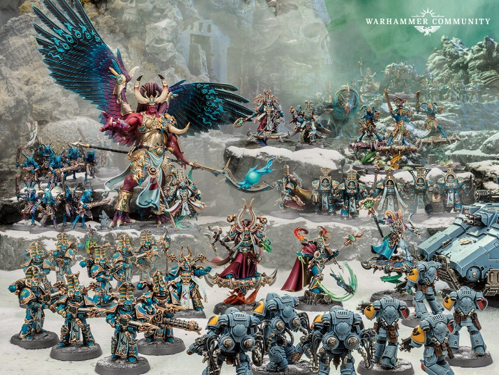

|
 You may ask, Why this is the best site ever? Well the answer is easy, I made it and it talks about me xD. Jokes aside I have to write like 400 characters for this assignment so I'm going to write a summary of my life and what my hobbys are. So let's begin from the start, my name is Zampiello Lutzu Fabio Fabrizio, I was born in 29-11-2000 at Fondi in the provice of Latina in Italy. My father is Lutzu Alessandro and my mother is Zampiello Alessia. I lived there untily last year of middle school where I moved to live in Rome with my mother and his husband Stenico Filippo. After like 5 year Filippo got a job in Zurich so we moved there and thats how I ended up living in Switzerland. Ah I forgot, my brother Leonardo came to this world the day before christ on the 24. While in middle school and highschool I learnd how to play the transverse flute and was preatty good, or at least I could when I got the will to study it. After highschool ended I  studied German for a year but I gave up, it was too hard of a task and I wanted to study at the university, so I decided for Lugano. My main hobbys are gaming, mostly with computer or nintendo, miniature painting and wargaming, like Warhammer 40k, and also book and manga reading. My favourite genre of games are Sandboxes, like Minecraft or Factorio, and Grand Strategy games like Crusader Kings 3 or Stellaris, but I sink most of my gaming time with League of Legends because I can play with my friends with it. For miniature painting I started during the pandemic and I was like charmed by it, I also bought a 3D resin printer so  I can print my own miniatures to paint and play with fellow wargamers here in Lugano. Manga I mostly like fantasy ones but my favourite is actually not a Manga but an italian comic Dragonero, after collecting it for like 5 years I may have come to complete the collection of it. For books I dont read them that much, mostly because of time, but my favourite genre is Sci-fi. |